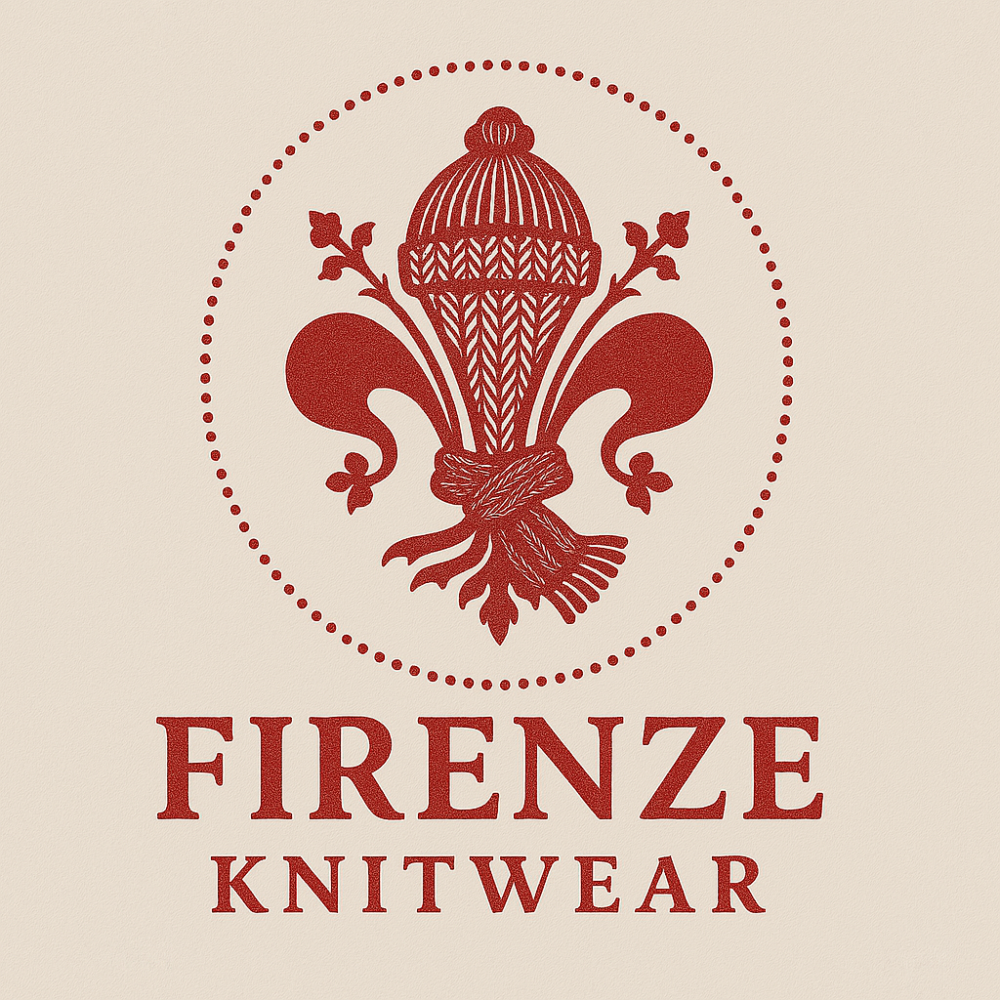

Firenze Knitwear
Inspired by Florence. Crafted with passion. Worn with pride.

Inspired by Florence. Crafted with passion. Worn with pride.
Firenze Knitwear is more than fashion — it's a heartfelt tribute to the enchanting city of Florence, where every street tells a story and every moment is a piece of art. Our founder spent unforgettable moments in this timeless city, sparking a passion to bring that magic to life through extraordinary knitwear.
Every pullover is crafted with love, dedication, and the finest materials — designed to reflect the beauty, artistry, and elegance of the Renaissance. Welcome to a world where threads carry legacy and warmth embraces style.